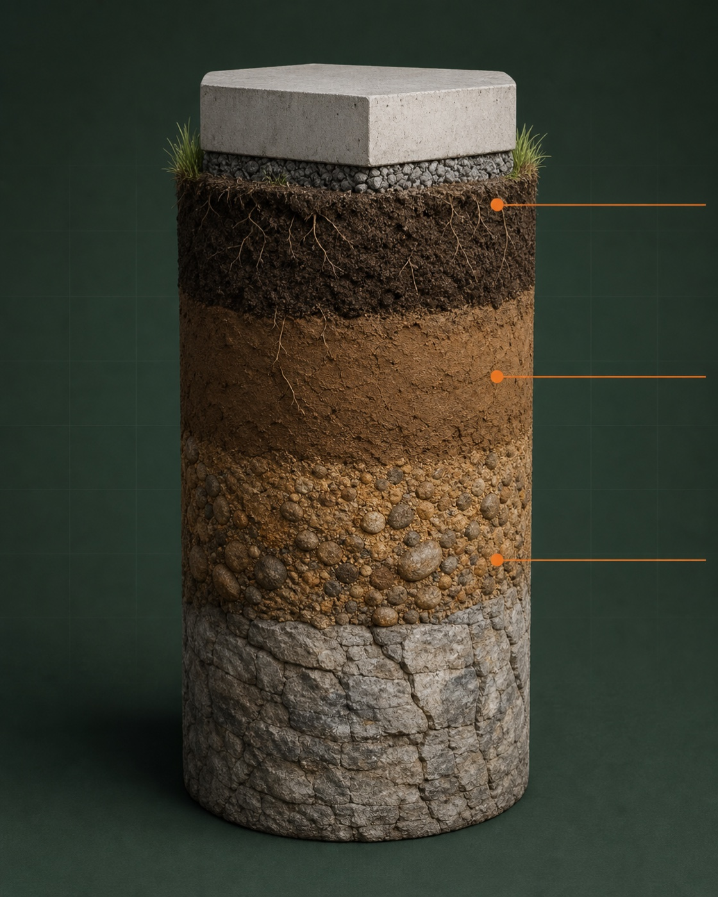
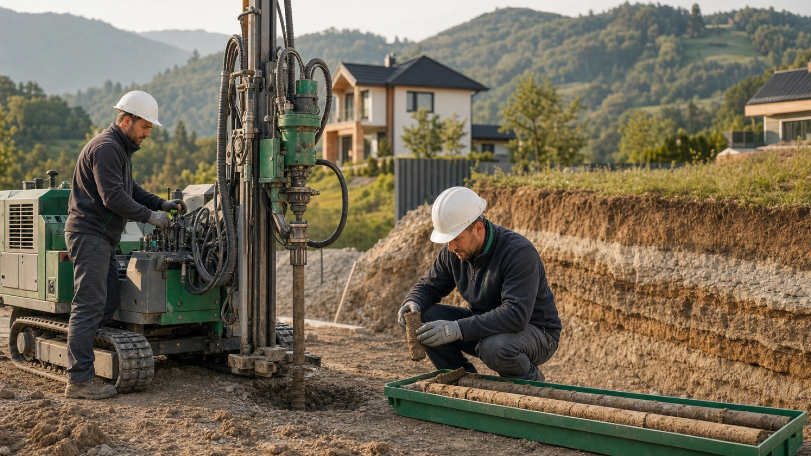
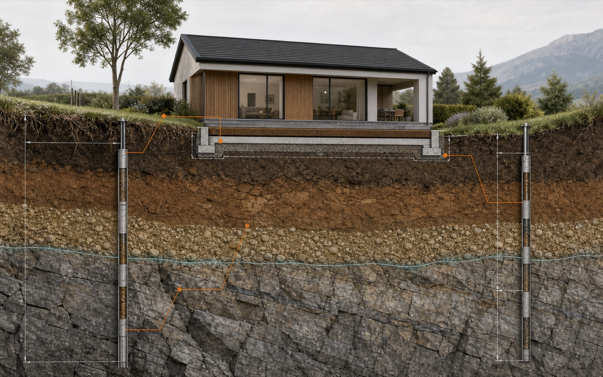

Da se hiša ne poseda
Preverimo nosilnost in plasti tal, da projektant izbere pravo globino ter način temeljenja.
Geologija za gradnjo hiše
Ne veste, katero raziskavo potrebujete? Nič hudega. Pošljite nam lokacijo in načrt hiše — sami bomo določili smiselni obseg, izvedli raziskave in vse razložili vam ter vašemu arhitektu.
Brez obveznosti. Za prvi odgovor zadostujeta naslov ali parcelna številka.
Preprosto povedano
Hiša stoji na tleh več desetletij. Majhna raziskava pred gradnjo pomaga arhitektu pravilno načrtovati temelje in vam prihrani draga ugibanja med izkopom.

Vsaka parcela je drugačna. Zato najprej pogledamo, kaj bo dejansko nosilo vašo hišo.
Preverimo nosilnost in plasti tal, da projektant izbere pravo globino ter način temeljenja.
Neenakomerna ali mehka tla lahko povzročijo premike. Bolje jih je poznati pred začetkom del.
Podtalnica vpliva na klet, izkop, hidroizolacijo, ponikanje in ureditev okolice.
Pravočasni podatki zmanjšajo možnost sprememb projekta in nepredvidenih del na gradbišču.
Geologija ni še en papir. Je navodilo arhitektu in statiku, kako naj vašo hišo varno in gospodarno postavita na konkretno parcelo.
Preverite svojo parcelo ↗Brez skrbi, vodimo vas
Ni vam treba poznati vrtin, standardov ali vrst poročil. Na vsakem koraku povemo, kaj potrebujemo in kaj sledi.
Naslov ali parcelna številka, kaj želite graditi in načrt, če ga že imate.
Pregledamo lokacijo, določimo potreben obseg in pošljemo ceno ter rok.
Dogovorimo termin, pridemo z lastno opremo in vzamemo potrebne vzorce.
Dobite poročilo in jasna priporočila. Po potrebi jih uskladimo neposredno z arhitektom.
Digitalni pomočnik
Odgovorite na nekaj preprostih vprašanj. Za vsak podatek vam pomočnik razloži, zakaj ga potrebujemo, kje ga najdete in kaj storiti, če ga še nimate.

Brez ugibanja o ceni
Cena je odvisna od terena, dostopa, velikosti objekta in potrebnih preiskav. Pošljite lokacijo in načrt — najprej določimo smiseln obseg, nato pa vam pred začetkom del pošljemo jasno ponudbo.
Ne boste plačali paketa na pamet. V 1–2 delovnih dneh prejmete predlog raziskav, kaj bo vključeno, predvideni rok in ceno.
Pošljem lokacijo za pregled Zadostujeta naslov ali parcelna številka in podatek, kakšno hišo načrtujete.
Kaj dobite?
Ni vam treba razvozlati strokovnih tabel. Izpostavimo pomembne ugotovitve in jih razložimo v kontekstu vaše hiše.
Plasti, nosilnost, voda in morebitna tveganja.
Priporočena globina in način temeljenja za projektanta.
Izkop, odvodnjavanje, priprava temeljnih tal in nadzor.
Ste arhitekt? Parametre, roke in odprta vprašanja lahko uskladimo neposredno z vami.
Izkušnje, ki pomirijo
GeoInženiring povezuje geologe, geotehnike, lastno terensko opremo in laboratorijske preiskave. Za vas to pomeni eno odgovorno ekipo od prvega vprašanja do poročila.
Izkušnje naročnikov
Tudi oni so gradili hišo in potrebovali jasen odgovor: kaj preveriti, kako poteka in kaj rezultati pomenijo za temelje.
Ekipa je hitro izvedla vrtine in raziskave brez zapletov. Komunikacija z geologom je bila jasna, strokovna in pravočasna.
Rezultate so podrobno razložili in podali jasna priporočila glede temeljenja. Posebej sta me prepričala strokovnost in prijazen odnos.
Še vedno niste prepričani?
Če ne veste, kaj izbrati, nam preprosto pošljite lokacijo. Prvi korak je pogovor, ne naročilo na slepo.
Pogosto ga potrebuje projektant za načrtovanje temeljev in dokumentacijo. Tudi kadar ni izrecno zahtevano, poda ključne podatke o nosilnosti, vodi in tveganjih na parceli.
Najbolje pred dokončno zasnovo temeljev in pred začetkom izkopa. Če imate idejno zasnovo ali situacijo objekta, jo pošljite skupaj z lokacijo.
Ni težava. Za prvi pregled običajno zadostujejo lokacija, približna velikost hiše, podatek o kleti in kontakt arhitekta, če ga že imate.
Da. Dogovorimo potrebne parametre, roke in obliko poročila, da bodo rezultati neposredno uporabni pri projektiranju.
Naredite prvi korak
Ni vam treba vedeti, katero raziskavo potrebujete. Povemo, kaj potrebujemo, pripravimo ponudbo in vas vodimo do jasnega poročila.